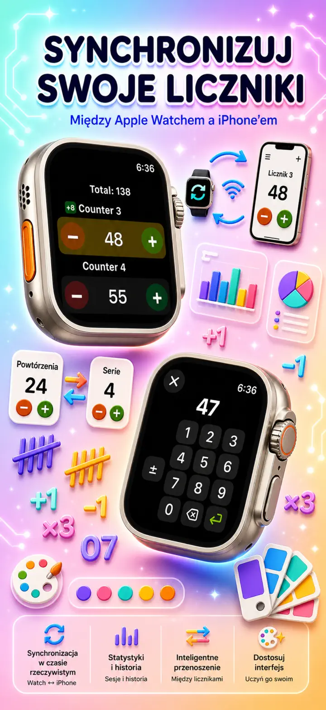
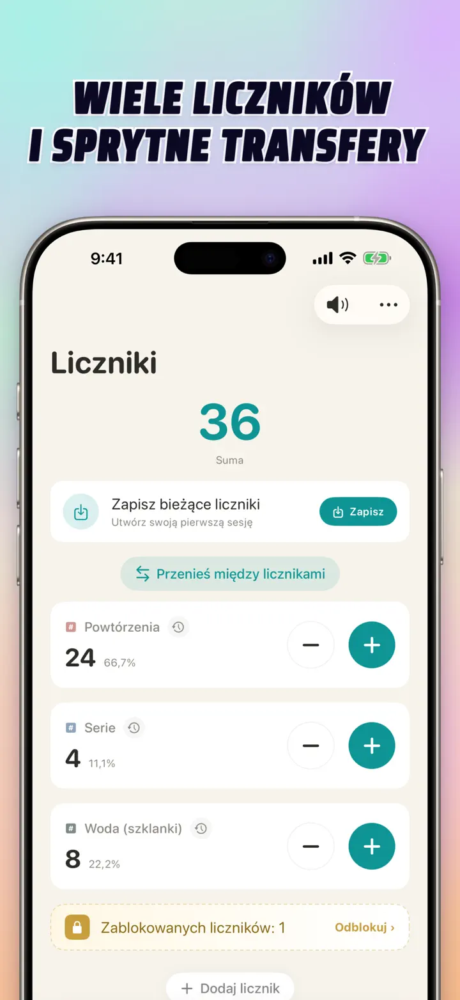
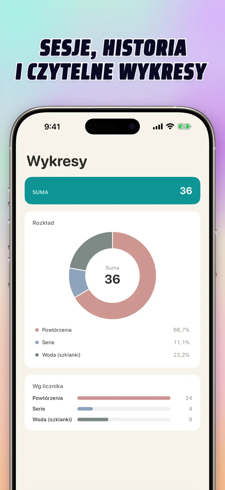
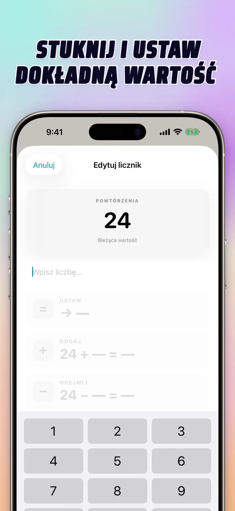
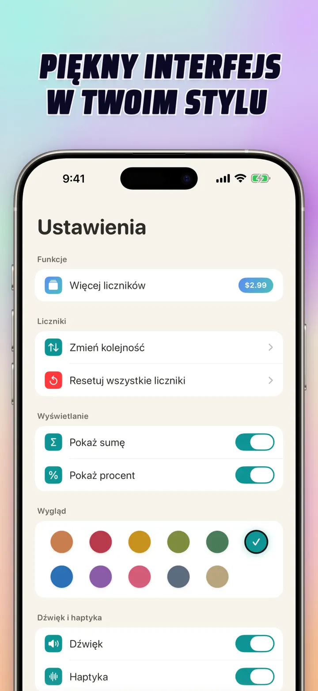
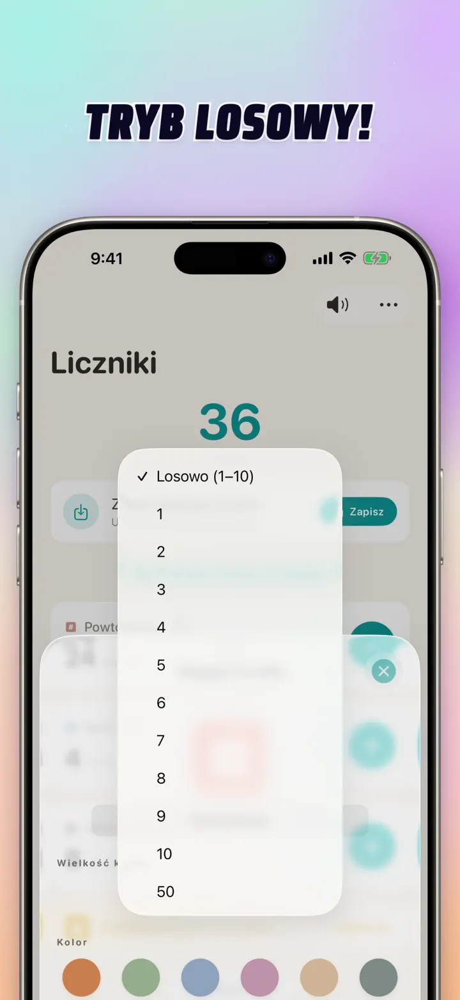

Licznik 123
Sync Watch, klikacz, wynik
Nowość: widżety na ekranie głównym — stuknij +/- na widżecie bez otwierania aplikacji. Licznik i klikacz z Apple Watch sync, tryb losowy, wykresy i historia.
Pobierz w App StoreO aplikacji
Licznik 123 to szybki, elastyczny licznik dla iPhone, iPad i Apple Watch. Nazwij każdy licznik, wybierz kolor i zliczaj cokolwiek — powtórzenia na siłowni, rzędy dziergania, różaniec, punkty w klasie, inwentaryzację, wyniki gry. Wszystko zostaje lokalnie na urządzeniu, działa offline.
WŁASNE LICZNIKI
- Twórz osobne liczniki dla aktywności, gier, rutyn albo list
- Własna nazwa i kolor dla każdego licznika
- Przeciągnij i upuść, żeby zmienić kolejność
- Przytrzymaj, by liczyć w trybie ciągłym
- W pełni offline — bez rejestracji, bez chmury
BEZPOŚREDNIE WPROWADZANIE I OPERACJE MASOWE
- Stuknij licznik, by ustawić wartość początkową — bez zerowania
- Masowe dodawanie/odejmowanie: zmień licznik o dowolną liczbę jednym tapnięciem
- Transfer: przenieś wartość z jednego licznika do drugiego bez podwójnej operacji
- Własny krok: jeden tap dodaje 1, 5, 10, 100 lub dowolną wartość
- Podgląd zmian na żywo
TRYB LOSOWY
- Pozwól licznikowi losować nową wartość od 1 do 10 przy każdym stuknięciu
- Dodawaj lub odejmuj losowe wartości przyciskami + i -
- Przydatne do ćwiczeń, gier, nagród, zajęć w klasie i rutyn
- Każde losowe stuknięcie trafia do historii licznika
SUMY I WYKRESY
- Suma wszystkich liczników jednym rzutem oka
- Widok procentowy: udział każdego licznika w całości
- Interaktywny wykres słupkowy — przełącz między wartością (#) a procentem (%)
- Sortowanie po wartości dla natychmiastowego rankingu
HISTORIA I UDOSTĘPNIANIE
- Pełna historia zmian: każde dodanie, odejmowanie i edycja
- Zapisz zestawy liczników i wczytaj je ponownie
- Udostępnij konfiguracje kolegom z drużyny, uczniom lub znajomym
- Oglądaj historię jako dziennik dat, grupowane sesje albo statystyki dzień/tydzień/miesiąc
SYNC NA ŻYWO Z APPLE WATCH
- Zmień licznik na iPhonie lub Apple Watch, a oba pozostaną zsynchronizowane
- Natywna aplikacja watchOS — nie tylko dodatek do iPhone'a
- Nazwy, kolory i wartości zsynchronizowane na nadgarstku
- Tapnij, by zliczać; przytrzymaj, by powtarzać — prosto z zegarka
- Działa samodzielnie, gdy iPhone jest poza zasięgiem
DLA iPhone, iPad I APPLE WATCH
- Adaptacyjne układy dla każdego rozmiaru ekranu
- iPad pokazuje więcej liczników naraz, obsługa Split View
- Prywatność na pierwszym miejscu: lokalne przechowywanie, bez chmury, bez konta
IDEALNY DO
- Serie i powtórzenia na siłowni
- Rzędy dziergania i oczka szydełkiem
- Różaniec, tasbih, koraliki modlitewne
- Punkty w klasie i sprawdzanie obecności
- Piłka ręczna, siatkówka, koszykówka — szybki wynik
- Tenis stołowy i ping pong
- Inwentaryzacja i stan magazynu
- Gry planszowe, karty, brydż, tysiąc
- Okrążenia w basenie i na bieżni
- Obserwacja ptaków
- Liczenie osób na wydarzeniach
- Śledzenie nawyków i celów
Pobierz Licznik 123 i spraw, by każde liczenie było łatwe — jasne, szybkie, prywatne.
Polityka prywatności: https://masawata.net/privacy-policy.html Warunki korzystania: https://www.apple.com/legal/internet-services/itunes/dev/stdeula/
Zrzuty ekranu






Licznik 123
Nowość: widżety na ekranie głównym — stuknij +/- na widżecie bez otwierania aplikacji. Licznik i klikacz z Apple Watch sync, tryb losowy, wykresy i historia.
Pobierz w App Store